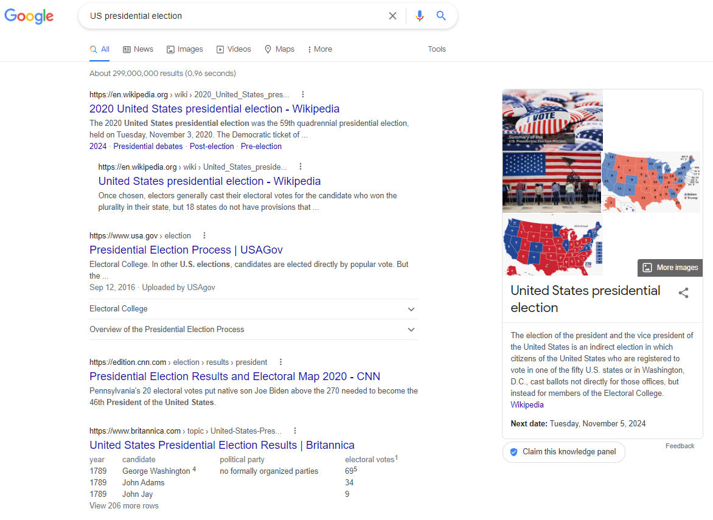
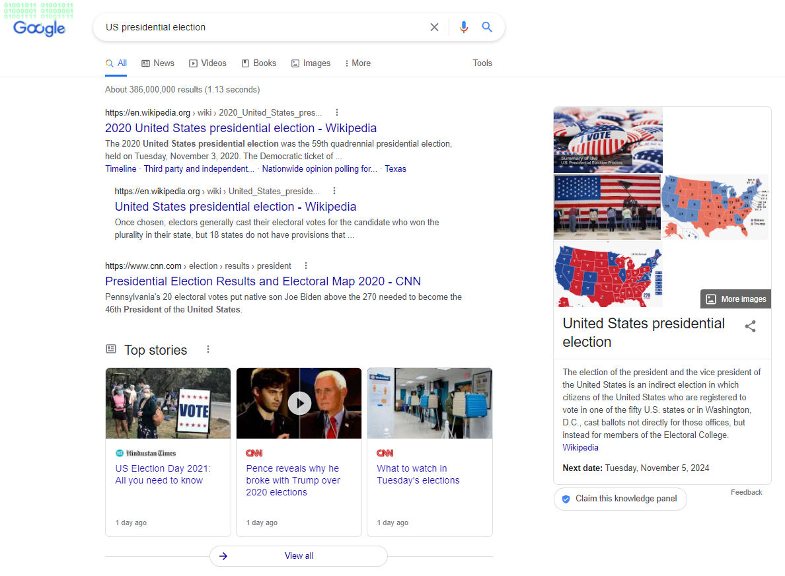

Öğrenen Sürümü
Eğitici Sürümü
Öğrenen Sürümü
Eğitici Sürümü
Modül 15: Filtreleri Yönetme
Modülün Tanımı
Bu modülün temel amacı, filtrelerin nasıl yönetilebileceğini ve bunlardan kaçınmak için neler yapılabileceğini açıklamaktır.
İkincil amaç, bu Modülün içeriğini başkalarını eğitmek için kullanmak isteyen eğitmenlere rehberlik etmektir.
Bu amaçlarla, bu modülde filtrelerin nasıl yönetilebileceği işlenmektedir.
Bu modülü başarıyla tamamlayanlar şunları yapabilir:
- kişiselleştirmenin ve türlerinin neler olduğunu anlayabilir
- kişiselleştirmenin ve filtrelemenin etkilerini anlayabilir
- filtre balonlarından kaçınmak için kullanıcıların neler yapabileceğini anlayabilir
- filtre balonlarını önlemek için platformların neler yapabileceğini anlayabilir
Ek olarak, bu Modülü başarıyla tamamlayan eğitmenler, konuyu nasıl öğreteceklerini anlarlar.
Modül Yapısı
Bu Modül aşağıdaki bölümlerden oluşur::
- Amaç, İçeriğin Tanımı ve Öğrenme Çıktıları
- Modülün Yapısı
- Öğrenenler için Yönerge
- Eğitmenler için Yönerge (hazırlık, kullanılacak yöntemler ve eğitmenler için ipuçları)
- İçerik (çalışma materyalleri ve alıştırmalar)
- Test
- Kaynakça (yararlanılan kaynaklar ve önerilen kaynaklar ile videolar)
Modülün ana hedefleri, içerik ve öğrenme çıktıları Modülün Tanımı bölümünde açıklanmıştır. Öğrenenler için Yönerge, öğrenenler için yönlendirme ve önerileri içerir. Eğitmenler için Yönerge, eğitimin farklı aşamalarında eğitmenlere rehberlik eder ve konuyu öğretirken faydalı olabilecek ipuçları sağlar. İçerik, tüm çalışma materyallerini ve ilgili alıştırmaları içerir. Test, öğrenenlerin kendilerini ve ilerlemelerini test edebilmeleri için hazırlanmıştır. Genellikle çoktan seçmeli veya doğru/yanlış sorularından oluşur. Kaynakça, yararlanılan kaynaklar ve önerilen kaynaklar şeklinde iki bileşenden oluşur. İçerik hazırlanırken yararlanılan ve atıf yapılan kaynaklar Kaynakça başlığı altında listelenmiştir. Ek Kaynakça, konuyla ilgili daha fazla bilgi edinmek isteyenler için okunması önerilen kaynaklar ve izlenmesi önerilen videoların bir listesinden oluşur.
Öğrenenler için Yönerge
Öğrenenlerden içeriği dikkatle okumaları, önerilen videoları izlemeleri ve alıştırmaları yapmaları beklenmektedir. Daha fazla bilgi gereksinimi duydukları konularda kaynakçada listelenen kaynaklara başvurabilirler. İçerik üzerindeki çalışmalarını tamamladıktan sonra, ilerlemelerini değerlendirmek için modül sonundaki testi yapmaları önerilir. Test sonuçlarına göre gerekirse çalışma materyali yeniden gözden geçirilebilir.
Eğitmenler için Yönerge
Bu bölüm, ele alınan konunun nasıl öğretileceğine ve Modül içeriğinin bu amaçla nasıl kullanılabileceğine ilişkin eğiticilere yönelik öneriler ve ipuçları içerir.
Hazırlık
Eğitim başlamadan önce görsel materyaller (resim ve video klipler) ve araştırmaya dayalı olgusal bilgilerle zenginleştirilmiş bir sunum (PowerPoint/Prezi/Canva) hazırlanması önerilir. Ayrıca bu Modüldeki örneklerin ve alıştırmaların hedef grubun aşina olduğu konulara göre uyarlanması önerilir. Mevcut durum veya iyi bilinen konularla ilgili yerel örneklerin seçilmesi, konuyu daha iyi açıklamaya yardımcı olacaktır. Ayrıca katılımcıların daha çok dikkatini çekecektir. Örnekler ne kadar tanıdık ve popüler olursa, mesaj o kadar iyi iletilecektir.
Başlarken
Konuya ısındırmak amacıyla başlangıçta Kahoot veya Mentimeter gibi araçlar kullanılarak katılımcılara konuyla ilgili genel ve kısa bazı sorular (3 ile 5 soru) yöneltilebilir. Böyle bir başlangıç katılımcıların konuyla ilgili mevcut bilgi düzeyleri hakkında bilgi sağlayacağı gibi bir motivasyon kaynağı olarak da kullanılabilir. Bu amaçla kullanılabilecek sorulara bazı örnekler şunlar olabilir: Kişiselleştirme nedir? Kişiselleştirmenin kullanıcılar üzerinde ne gibi etkileri olabilir?
Kullanılacak Yöntemler
Eğitim sırasında çeşitli öğretim yöntemleri bir arada kullanılabilir:
- Ders anlatma
- Tartışma
- Grup çalışması
- Kendini yansıtma
Eğitmenler için İpuçları
Isınma
Katılımcıları sürece dahil etmenin ve öğrenecekleri şeyler hakkında ortak beklentiler oluşturmanın etkili bir yolu, konuyla ilgili birkaç ön soru sorarak düşünme ve tartışma olanağı yaratmaktır. Bu, grup çalışması ile fikirlerin ve görüşlerin sözlü olarak tartışılması şeklinde yapılabileceği gibi bireysel olarak her katılımcının fikirlerini kağıt üzerine yazması şeklinde de yapılabilir. Etkinlik şu şekilde gerçekleştirilebilir:
- Katılımcılara şunlar sorulabilir:
- kullandıkları platformlarda (Google, Facebook, YouTube vb.) herhangi bir kişiselleştirme yapıp yapmadıkları
- kullandıkları platformlardaki (Google, Facebook, YouTube vb.) algoritmaların uyguladığı kişiselleştirmeden haberdar olup olmadıkları
- kullandıkları platformlarda algoritmalar tarafından yapılan kişiselleştirmeden kaçınmak için kendilerinin herhangi bir şey yapıp yapmadıkları
- filtre balonlarının veya yankı fanuslarının etkisi altında kaldıklarının farkında olup olmadıkları
Dersin Amacının Belirtilmesi
Amaç netleştirilmelidir. Bu dersin amacı, filtrelerin nasıl yönetilebileceğini ve bunlardan kaçınmak için neler yapılabileceğini açıklamaktır. Isınma sorularının ardından amaç ve hedefleri netleştirmek daha kolay olacaktır.
Ders İçeriğinin Sunulması
İçerik sunulurken katılımcılarla etkileşim içinde olmak ve onları derse aktif katılıma teşvik etmek önemlidir.
- Kişiselleştirme ve türleri açıklandıktan sonra, katılımcılara kişiselleştirmenin farkında olup olmadıklarını sorulabilir.
- Aynı arama için arama motorlarında gelen farklı sonuçlardan bahsederken, mümkünse arama örneklerinin farklı kişiler tarafından ve farklı konumlarda (ülkelerde) yapılan aramalar olması sağlanabilir. Böylelikle sonuç farklılıkları daha net görülebilir.
- Herhangi bir konuda haber veya bilgi ararken, aynı bakış açısına sahip kaynakları kullanmanın etkileri filtre balonları ve yankı fanusları ile ilişkilendirilerek açıklanabilir.
- Kişiselleştirme ve filtreleme konusunda bilinçli bireyler olmanın neden önemli olduğu vurgulanarak hem birey hem de demokratik toplum açısından öneminden bahsedilebilir.
Bitirirken
Dersin kısa bir özeti yapılmalı, verilmek istenen en önemli mesajların tekrarlanmasını sağlayacak birkaç soru sorulmalıdır. Örneğin, katılımcılara filtre balonlarından kaçınmak için kullanıcıların ve platformların neler yapabileceği sorulabilir.
Tartışma sonucunda katılımcıların kişiselleştirme ve filtrelemenin etkilerini anladığından emin olun.
İçerik: Filtreleri Yönetme
Giriş
Algoritmaların ne olduğu, nasıl çalıştığı, artıları ve eksileri, etkileri, haber akışları ile olan bağlantısı ile filtre balonları ve yankı fanusu hakkında detaylı bilgiler Module 6’da açıklanmıştır. Bu modülde ise algoritmalarda kullanılan filtrelerden kaçınmak için neler yapılabileceği üzerinde durulmaktadır.
Günümüzde çoğunlukla Google'ın kişiselleştirilmiş sonuçları ve kimin güncellemelerini göreceğimize bizim adımıza karar veren Facebook haber akışı gibi algoritmik kişiselleştirme ve önerilere bağımlı şekilde yaşamaktayız (Pariser, 2011a ). Kullanılan algoritmalar bu seçimleri, platformlar tarafından geçmiş kullanımlarımıza dayalı olarak toplanan veriler ile platformlara gönüllü olarak verdiğimiz verileri kullanarak yapmaktadır (Fletcher, t.y.). Bu noktada, kendi kendine seçilen kişiselleştirme ile önceden seçilmiş kişiselleştirme arasındaki ayrımdan bahsetmekte fayda vardır.
Kendi seçtiğimiz kişiselleştirme (self-selected personalisation), kendimizin gönüllü olarak yaptığımız kişiselleştirmeleri ifade etmektedir ve bu tür kişiselleştirme özellikle haber kullanımı söz konusu olduğunda önemlidir. İnsanlar her zaman kendi haber kullanımlarını kişiselleştirmek için çeşitli kararlar almaktadırlar (örneğin, hangi gazeteleri alacakları, hangi TV kanallarını izleyecekleri ve hangilerinden kaçınacakları gibi). Bu durum “seçici maruz kalma” (selective exposure) olarak da adlandırılmakta ve insanların haberlere olan ilgi düzeyleri, siyasi inançları vb. gibi bir dizi farklı şeyden etkilenmektedir (Fletcher, t.y.).
Ön seçimli kişiselleştirme (pre-selected personalisation) ise, kişilere bazen algoritmalarla bazen de onların bilgisi dışında yapılan kişiselleştirmedir. Bu doğrudan filtre balonlarıyla ilgilidir. Çünkü algoritmalar insanlar adına seçimler yapmaktadır ancak, insanlar bunun farkında olmayabilmektedir (Fletcher, t.y.).
Birçok kullanıcı için arama sonuçlarının kişiselleştirilmesi yararlı ve kullanışlıdır. Öte yandan, pek çok kullanıcı da karşılaştıkları sitelerin kontrolleri dışındaki güçler tarafından şekillendirilmesinden rahatsızlık duymaktadır (Ensor, 2017). Esasen, tercihlerinizle yakından uyumlu içerik sağlamaya ve tüketmeye odaklanmak, daha geniş resmi görmenizi kısıtlayan bir balon veya fanus oluşmasına neden olabilmektedir (Ensor, 2017).
Arama motorlarının haberlere erişmek kullanımında insanların belirli bir amacı vardır, o da belirli bir haberi bulmak. Ancak, belirli bir konuyu aradığınızda, arama motorlarının geçmiş kullanımlarınız hakkında toplanan verilere dayalı olarak algoritmik seçim kullanması söz konusu olabilir. Dolayısıyla, insanlar arama motorlarına giriş yaptıklarında, algoritmik seçimin onları bir filtre balonunda tutma olasılığı bulunmaktadır (Fletcher, t.y.). 2011 yılında Google'ın 57 farklı sinyale (kullanıcıların konumları, ne tür tarayıcı kullandıkları vb.) bakarak kişiselleştirilmiş sonuçlar sunduğu belirtilmiştir (Pariser, 2011a). Günümüzde ise Google'da listelenecek sonuçların ilgi düzeyine karar verilirken 200'den fazla faktörün dikkate alındığı belirtilmektedir (Dean, 2021). Ancak, Google'ın kelimenin tam anlamıyla başka ne tür bir algoritma kullandığı tam olarak net değildir.
Kişiselleştirmenin Google üzerindeki etkileri aşağıdaki örneklerde gösterilmektedir. İlk örnek, Türkiye'den giriş yapmış bir kullanıcının, ikincisi Türkiye'den anonim bir kullanıcının, sonuncusu ise ABD'den anonim bir kullanıcının yaptığı arama sonuçlarını göstermektedir.

Kaynak: Google Search for “US presidential election” with logged-in from Turkey

Kaynak: Google Search for “US presidential election” with anonymous from Turkey

Kaynak: Google Search for “US presidential election” with anonymous from the USA
Sosyal medya platformları ise, genellikle kendi seçtiği kişiselleştirmeyi önceden seçilmiş kişiselleştirme ile birleştirmektedir. Bununla birlikte, insanların hangi haber kuruluşlarını takip ettikleri ya da etmedikleri konusundaki tercihleri de bilinmektedir. Öte yandan algoritmaların, ilgilenmedikleri insanlardan veya özellikle sevmedikleri platformlardan haberleri gizlemeleri de mümkündür (Fletcher, t.y.).
Instagram’da kişiselleştirmenin etkileri aşağıdaki örneklerde gösterilmektedir. İlk örnek Türkiye’den oturum açmış bir kullanıcının, ikincisi ise Türkiye’den anonim bir kullanıcının yaptığı arama sonuçlarını göstermektedir.


Kaynak: Instagram Search for “Venice” with logged-in from Turkey


Kaynak: Instagram Search for “Venice” with anonymous from Turkey
Platformların çoğu, arka planda çalışan algoritmaları hakkında şeffaf bilgi sağlamaz. Arama motorlarının, sosyal ağ platformlarının ve diğer büyük çevrimiçi aracıların algoritmalarının, bireylerin filtre balonları aracılığıyla erişebilecekleri bilgi çeşitliliğini azalttığı ve farklı amaçlarla kullandığı ve bunun demokrasi için büyük bir tehdit oluşturabileceği belirtiliyor (Bozdağ ve van den Hoven, 2015, s. 249). Kullanılan filtrelerin şeffaf olmaması, seçim özgürlüğünü kısıtlamakta ve kullanıcıların bilgilenme davranışları sonucunda ortaya çıkan çok sayıda veri ile elde edilen içgörü sayesinde bireyler, tanımı şeffaf olmayan çeşitli kategorilerde sınıflandırılmaktadır. Öte yandan, vatandaşların farklı seçenekleri değerlendirebilmeleri ve makul kararlar verebilmeleri için farklı görüş ve seçeneklerden haberdar olmaları gerekmektedir. Ancak algoritmaların, kullanıcılar adına erişilecek içeriğe, onların bilgisi olmadan veya diğer içeriğin ne olduğunu görmeden karar vermesi bu durumu engellemektedir.
Filtre Balonlarından Nasıl Kaç(ın)abiliriz?
Filtre balonlarından tamamen kurtulmak için tek yol Google'ı, diğer sosyal medya platformlarını ve haber platformlarını kullanmayı bırakmaktır (Ensor, 2017). Ancak, bu çok gerçekçi bir çözüm değildir. Algoritmalardan ve bunların yansıması olan filtre balonları ve yankı fanusundan tamamen kaçmak mümkün olmasa da gerek kullanıcıların gerekse platformların dikkat edebileceği birtakım hususlar vardır.
Kullanıcılar Neler Yapabilir?
- Bir veya birkaç kaynağa bağlı kalmak yerine farklı kaynaklardan beslenmek:
Yankı fanusları Google ve Facebook'tan daha önce vardı. Örneğin, gazeteler yıllardır haberleri kendi önyargılarıyla aktarıyorlar. Bunu gazetelerin ve haber platformlarının dünyada olup bitenler için yaptıkları yorumlardaki farklılıklardan anlaşılabilir (Ensor, 2017). Geniş bir bakış açısı sunmayı amaçlayan haber sitelerini takip etmek sizin platformların sahip olduğu önyargılara kapılmanızı engelleyebilir. Sık kullandığımız kaynaklardan bağımsız olarak, kaynakların ön sayfalarına hızlıca göz atmak herhangi bir önyargı hakkında size fikir verecektir (Farnam Street, t.y.). Google gibi platformların filtre balonundan kaçmak için en güçlü araç, kişinin durumla ilgili kendi farkındalığıdır. Önemli bilgileri araştırıyorsanız birden fazla kaynak kullanmaya ve duruma objektif olarak bakmaya çalışın (Ensor, 2017).
Alışkanlıkları kırmak, her gün sıklıkla kontrol edilen haber kaynaklarını değiştirmek ya da yerine yenilerini eklemek çok kolay değildir. Ancak, zaman zaman çevrimiçi ortamda yolunuzu değiştirmek yeni fikirler ve insanlarla karşılaşma olasılığınızı önemli ölçüde artırır (Pariser, 2011b, s. 122).
Filtre balonunun siyaset tarafından toplumsal ayrışmaya neden olduğunu veya bunu mümkün kıldığını, insanları alternatif siyasi bakış açılarına dair içeriğe maruz bırakmanın siyasi aşırılığı azaltacağını ve kutuplaşma ile başa çıkmada bunun son derece önemli olduğunu söylemek mümkündür (Stray, 2012). Hakikate aç olmak, filtre balonlarının üstesinden gelmenin en önemli yönüdür. Herkesin meseleler hakkında farklı görüşlere bakması ve sorunları birden çok kaynaktan okuması, demokrasinin tehdit altına girmesini önlemede son derece önemlidir (Allred, 2018).
- Tarayıcı çerezlerini silmek veya engellemek:
Birçok web sitesi, onları her ziyaret ettiğimizde “çerezler” (küçük metin dosyaları) yerleştirir. Bu çerezler daha sonra bize hangi içeriğin gösterileceğini belirlemek için kullanılır. İnternet tarayıcınızın kim olduğunuzu belirlemek için kullandığı tanımlama bilgilerini (çerezleri) düzenli olarak silmek kısmi bir çözümdür (Farnam Street, t.y.; Pariser, 2011b, s. 122).

Chrome - Ayarlar - Gizlilik ve Güvenlik - Çerezler ve Diğer Site Verileri

Firefox - Ayarlar - Gizlilik ve Güvenlik - Çerezler ve Site Verileri
Çerezler manuel olarak silinebimektedir (Seçenekler veya Tercihler'i seçip ardından Privacy and Security kısmında Çerezleri sil'i seçebilirsiniz). Ayrıca, çerezleri kaldıran tarayıcı uzantıları da mevcuttur (Farnam Street, t.y.).
Çerezleri ve arama geçmişinizi/tarayıcı önbelleğini silmenin yanı sıra çevrimiçi yapmanız gerekenleri hesaplarınıza giriş yapmadan (örneğin, gmail’de oturum açmadan) gerçekleştirme yolunu da izleyebilirsiniz (Farnam Street, t.y.; Pariser, 2011b, s. 122).
Ek olarak, tüm çevrimiçi etkinliklerinizi, kişisel bilgilerinizin daha azının depolandığı bir "gizli" pencerede çalıştırabilirsiniz. Ancak bu, çoğu hizmet olması gerektiği gibi çalışmayacağı için garanti bir yol gibi görünmemektedir (Pariser, 2011b, s. 122). Özel Tarama, “gizli” bir pencerede parolaları, tanımlama bilgilerini ve tarama geçmişini kaydetmeden arama yapmanıza izin vererek çalışır. Ancak, kimliğinizi veya çevrimiçi etkinliğinizi gizlememektedir. Web siteleri ve İnternet servis sağlayıcıları, oturum açmamış olsanız bile ziyaretiniz hakkında bilgi toplayabilmektedir (“Common myths about private”, t.y.; Google Chrome help, 2021). Sık kullandığınız Facebook, Amazon, Gmail ve benzer sitelerden herhangi birine gizli modda giriş yaptığınız anda, eylemleriniz artık anonim veya geçici olmayacaktır. Çerezler ve izleme verileri, özel oturumunuz sona erdiğinde silinmekle birlikte, oturum etkinken, etkinliklerinizi çeşitli hesaplar ve profiller arasında bağlayarak yine de kullanılabilirler. Bu durumda, örneğin Facebook'ta oturum açtıysanız, Facebook diğer sitelerde neler yaptığınızı görebilir ve gizli modda bile reklamlarını buna göre ayarlayabilir. Benzer durum Google için de geçerlidir (Nield, 2020). Bu durum da sizin tamamen özgür olmanızı engellemektedir. Çünkü, filtre balonu yalnızca çevrimiçi kişisel etkinliklere özgü değildir, cihaz ve konum gibi kişisel faktörleri de dikkate alır (Ensor, 2017).
Herhangi bir izlemeyi mutlak minimumda tutmak için, gizliliğe odaklanan bir tarayıcı seçmek, kullanıcılara filtrelerinin nasıl çalıştığı ve kişisel bilgileri nasıl kullandıkları konusunda daha fazla kontrol ve görünürlük sağlayan siteleri kullanmayı tercih etmek, verilerinizin madenciliğini yapmayan DuckDuckGo, StartPage gibi arama motorlarını kullanmak veya güvenilir bir VPN (virtual private network) programı kurmak da tercih edilebilecek diğer yaklaşımlar olabilir (Nield, 2020; Pariser, 2011b, s. 122).

Kaynak: DuckDuckGo Search
- Reklam engelleyici tarayıcı uzantılarını kullanmak:
Bu uzantılar, ziyaret ettiğimiz web sitelerinden reklamların çoğunu kaldırır. Ancak, çoğu site çalışmalarını desteklemek için reklam gelirine güvenmektedir. Bazı siteler ise bir sayfayı görüntülemeden önce kullanıcıların reklam engelleyicilerini devre dışı bırakmasında ısrar etmektedir. Bunlar, reklam engelleyici tarayıcı uzantılarının dezavantajlı kısmıdır (Farnam Street, t.y.).
- Filtre balonunu patlatmak için yazılımları kullanmak: Escape Your Bubble (Chrome extension), Read Across The Aisle (Chrome extension), PolitEcho (Chrome extension) gibi uygulamaları ya da tarayıcı uzantılarını kullanmak da filtre balonlarından kaçınmaya yardımcı olabilir.
- Eğitim:
Filtre balonlarıyla ilgili en büyük sorunlardan biri, çoğu kişinin filtre balonlarının ne olduğunu bile bilmiyor oluşudur. Bunu bilmeyen bireyler, sonuçlarının kişiselleştirildiğinden haberdar olmayabileceği için gerçeği arama konusunda da gerekli adımları atamayacaktır. Bu nedenle, eğitim yoluyla bireylere, filtre balonları ve onlar tarafından nasıl manipüle edildiğimiz, çeşitli güvenilir sitelerden bilgi tüketme, argümanların birden çok yönünü arama gibi konularda farkındalık kazandırılması filtre balonlarının olumsuz etkilerini azaltmaya yardımcı olacaktır (Allred, 2018). Bireylerin, Google veya diğer kaynaklarda yaptıkları aramalarda arama yardımcılarını kullanarak gelişmiş arama yapmalarını öğrenmeleri sağlanmalıdır (Cisek ve Krakowska, 2018). Buna ilişkin olarak, bireylerin bilgi okuryazarlığı ile haber okuryazarlığı becerilerini edinmeleri son derece önemlidir.
Öte yandan, temel düzeyde algoritmik okuryazarlık geliştirmek de önemli hale gelmektedir. Giderek artan bir şekilde vatandaşlar, kamusal ve ulusal yaşamımızı etkileyen programlanmış sistemler hakkında yargıya varmak zorunda kalacaklardır. Binlerce satır kodu okuyacak kadar akıcı olmasa bile, temel kavramları (değişkenlerin, döngülerin ve belleğin nasıl değiştirileceği gibi), bu sistemlerin nasıl çalıştığını ve nerede hata yapabileceklerini öğrenmeleri yararlı olacaktır (Pariser, 2011b, s. 124).
Bireyler bir diğer deyişle, kullanıcılar olarak kendi davranışlarımızı değiştirmek, filtre balonlarıyla mücadele sürecinin bir parçasıdır. Ancak, bu tek başına yeterli değildir. Kişiselleştirmeyi ileriye taşıyan platformların da dikkat etmesi gereken bazı noktalar vardır (Pariser, 2011b, s. 125).
Platformlar Neler Yapabilir?
Filtre balonları ile mücadelede öncelikle, sosyal medya platformlarının ve diğer bilgi kaynaklarının yaratıcıları, tarafsız web siteleri oluşturmaya çalışmalı ve algoritmalarına uyguladıkları vatandaşlık görevlerinin bilincinde olmalıdırlar (Allred, 2018).
Bir diğer önemli adım ise platformların filtreleme sistemlerini halka daha şeffaf hale getirmeye çalışmalarıdır. Böylece, ilk etapta sorumluluklarını nasıl yerine getirdikleri hakkında bir tartışma yapmak mümkün olabilir. Tam bir şeffaflık sağlanamasa bile, bu platformların sıralama ve filtreleme sorunlarına nasıl yaklaştıklarını daha açık hale getirmeleri mümkündür (Pariser, 2011b, s. 125). Şeffaflık, yalnızca bir sistemin işleyişinin kamuya açık hale getirilmesi anlamına gelmez. Aynı zamanda bireysel kullanıcıların sistemin nasıl çalıştığını sezgisel olarak anladıkları anlamına gelir. Bu durum, araçların bizi kontrol etmesi ve kullanması yerine, insanların bu araçları kontrol etmesi ve kullanması için gerekli bir ön koşuldur (Pariser, 2011b, s. 126).
Platformların ayrıca, verileri nasıl kullandıklarını (hangi bilgi parçalarının ne derecede ve hangi temelde kişiselleştirildiği gibi) açıklamaları ve bu konuda da şeffaf olmaları son derece önemlidir (Pariser, 2011b, s. 126).
Günümüzdeki fazla miktarda ve hızlı bilgi akışı söz konusu olduğunda, bunlar içerisinden seçim yapmak gerektiği aşikardır. Buradaki soru, herhangi birinin ne (hangi bilgileri) görmesi gerektiğine dair seçimin nasıl yapılacağıdır. Buna dair net bir yanıt olmasa da platformlar, başkası için seçim yapmaya çalışmak yerine, onlara farklı olasılıkları sunmaya çalışabilirler (Stray, 2012).
Özetle, filtre balonlarından kaçınmada kullanıcılara düşen en önemli görev, filtre balonlarının farkında olmak ve bilgi konusunda farklı kaynaklardan beslenmektir. Platformlara düşen en önemli görev ise kullandıkları algoritmaların çalışma mantıkları konusunda şeffaflık sağlamak ve kullanıcılarını kendileri ile ilgili hangi verileri, ne amaçla topladıkları konusunda bilgilendirmektir.
Alıştırmalar
Alıştırma 1
Alıştırma 2
Test
Kaynakça
Allred, K. (2018, 13 Nisan). The causes and effects of “filter bubbles” and how to break free. Medium.
Bozdağ, E. ve van den Hoven, J. (2015). Breaking the filter bubble: Democracy and design. Ethics and Information Technology, 17, 249-265.
Cisek, S. ve Krakowska, M. (2018). The filter bubble: A perspective for information behaviour research. Paper presented at ISIC 2018 Conference.
Common myths about private browsing. (t.y.). Support Mozilla.
Dean, B. (2021, 10 Ekim). Google’s 200 ranking factors: The complete list (2021). Backlinko.
Ensor, S. (2018, 18 Ağustos). How to escape Google's filter bubble. Search Engine Watch.
Farnam Street. (t.y.). How filter bubbles distort reality: Everything you need to know [Blog gönderisi].
Fletcher, R. (t.y.). The truth behind filter bubbles: Bursting some myths. Reuters Institute for the Study of Journalism.
Google Chrome help. (2021). Browse in private.
Nield, D. (2020, 8 Şubat). Incognito mode may not work the way you think it does. Wired.
Pariser, E. (2011a, Mart). Beware online “filter bubbles”. TED Talks.
Pariser, E. (2011b). The filter bubble: What the Internet is hiding from you. The Penguin Press.
Stray, J. (2012, 11 Temmuz). Are we stuck in filter bubbles? Here are five potential paths out. NiemanLab.
Önerilen Kaynaklar
Lanier, J. (t.y.). Agents of alienation.
Piore, A. (2018, 22 Ağustos). Technologists are trying to fix the “filter bubble” problem that tech helped create. MIT Technology Review.
Sunstein, C. (2007). Republic.com 2.0. Princeton University Press.
Önerilen Video
Pariser, E. (2019, Temmuz). What obligation do social media platforms have to the greater good [Video]. TED Talks.